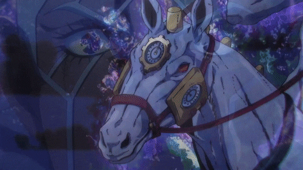

Made in Heaven (เมด อิน เฮฟเว่น)
ร่างต้น: บาทหลวง เอ็นริโก้ พุชชี่ (Enrico Pucci) | เรื่อง: JoJo's Bizarre Adventure Part 6: Stone Ocean
Made in Heaven เป็นหนึ่งในสแตนด์ที่แข็งแกร่งและทรงพลังที่สุดในจักรวาล JoJo's Bizarre Adventure โดยเป็นผลลัพธ์สูงสุดของ "แผนการสู่สรวงสวรรค์" (Heaven Plan) ที่เขียนไว้ในสมุดบันทึกของ DIO

1. จุดกำเนิดและวิวัฒนาการ (Evolution)
สแตนด์ร่างนี้เกิดจากการวิวัฒนาการต่อเนื่องกัน 3 ขั้นตอน:
- Whitesnake: สแตนด์ร่างแรก ใช้ถอดดวงวิญญาณและความทรงจำออกมาเป็นแผ่นดิสก์
- C-Moon: เกิดจากการรวมร่างกับ "เด็กทารกสีเขียว" (Green Baby) ทำให้ควบคุมแรงดึงดูดรอบตัวได้
- Made in Heaven: เกิดขึ้นเมื่อเดินทางไปตามพิกัดและเงื่อนไขเวลาที่ DIO กำหนดไว้ ณ ศูนย์อวกาศเคนเนดี ในคืนวันพระจันทร์ดับ

2. รูปลักษณ์และที่มาของชื่อ (Appearance & Name Origin)
- รูปลักษณ์: มีลักษณะครึ่งคนครึ่งม้า (คล้ายเซนทอร์) ท่อนบนเป็นมนุษย์ ท่อนล่างและส่วนหน้าเป็นหัวม้า มีหน้าปัดนาฬิกาประดับอยู่ตามร่างกาย สื่อถึงเวลาและการเคลื่อนที่อย่างรวดเร็ว
- ที่มาของชื่อ: ตั้งตามชื่ออัลบั้มและเพลงของวง Queen (ปี 1995) โดยในนิตยสารรายสัปดาห์ตอนแรกเคยใช้ชื่อว่า Stairway to Heaven (ของ Led Zeppelin) ก่อนจะเปลี่ยนเป็น Made in Heaven ในฉบับรวมเล่ม

3. เจาะลึกความสามารถ (Abilities & Mechanics)
ความสามารถหลักคือ "การเร่งเวลาของจักรวาลในระดับไร้ขีดจำกัด" (Universal Time Acceleration) ผ่านการควบคุมแรงดึงดูดของจักรวาล:
- การเร่งเวลาของสิ่งไม่มีชีวิต: สิ่งไม่มีชีวิต เทคโนโลยี และปรากฏการณ์ธรรมชาติจะถูกเร่งเวลาอย่างมหาศาล โดยสิ่งมีชีวิตจะไม่ถูกเร่งไปด้วย ทำให้เผชิญกับโลกที่หมุนเร็วเกินรับทัน
- ความเหนือมนุษย์ของพุชชี่: มีเพียงพุชชี่และสแตนด์เท่านั้นที่เคลื่อนไหวสอดคล้องกับเวลาที่ถูกเร่งได้ ทำให้พุชชี่เคลื่อนที่เร็วระดับอนันต์ (Infinite Speed) จนกระทั่งการหยุดเวลาของ Star Platinum ถูกบีบให้เหลือเพียงเสี้ยววินาที
- การรีเซ็ตจักรวาล (Universe Reset): เมื่อเร่งเวลาไปจนถึงจุดสิ้นสุดของจักรวาล (Singularity Point) จักรวาลจะกำเนิดใหม่และสร้างตัวเองขึ้นมาใหม่ในรูปแบบเดิม (Loop/Rebirth)
- นิยามของ "สวรรค์" (Absolute Fate): เมื่อจักรวาลรีเซ็ต มนุษย์ทุกคนจะรับรู้ถึง "ชะตากรรม" ของตัวเองในอนาคตล่วงหน้าโดยสัญชาตญาณ พุชชี่เชื่อว่าการรับรู้และยอมรับชะตากรรมคือความสงบสุขทางจิตใจอย่างแท้จริง

4. สถิติของสแตนด์ (Stand Stats)
| พารามิเตอร์ | ระดับ | คำอธิบาย |
|---|---|---|
| พลังทำลาย (Destructive Power) | B | พลังหมัดปานกลาง แต่ความเร็วสูงทำให้เกิดแรงปะทะระดับสังหารได้ง่าย |
| ความเร็ว (Speed) | ∞ (Infinite) | ไร้ขีดจำกัด เร่งขึ้นเรื่อยๆ ตามเวลาที่ผ่านไป |
| ระยะทาง (Range) | C | ระยะหมัดคือ C แต่ผลกระทบจากการเร่งเวลามีผลทั่วทั้งจักรวาล |
| ความทนทาน (Persistence) | A | มีความเสถียรและทนทานสูงมากในการทำงานต่อเนื่อง |
| ความแม่นยำ (Precision) | C | ด้วยความเร็วที่สูงมาก การควบคุมจุดปะทะละเอียดทำได้ยาก |
| การพัฒนา (Development Potential) | A | ศักยภาพสูงสุดในการเปลี่ยนโลกและสร้างจักรวาลใหม่ |
5. จุดอ่อนและการพ่ายแพ้ (Weakness & Defeat)
- ไม่สามารถแทรกแซงชะตากรรม: พุชชี่ไม่สามารถเปลี่ยนชะตากรรมที่ถูกกำหนดไว้แล้วได้ ทำได้เพียงเร่งให้เกิดขึ้นเร็วขึ้นเท่านั้น
- สังขารของพุชชี่: ร่างกายของพุชชี่ยังคงเป็นมนุษย์ธรรมดาที่บาดเจ็บและรับผลกระทบทางกายภาพได้ตามปกติ
- พ่ายแพ้ด้วยพิษออกซิเจน: เอ็มโพริโอ (Emporio) ใช้สแตนด์ Weather Report ปล่อยแก๊สออกซิเจนเข้มข้น 100% ในห้องกระจก การเร่งเวลาของ Made in Heaven บังคับให้พุชชี่สูดออกซิเจนเข้าสู่ร่างกายอย่างรวดเร็วเร่งด่วนจนเกิดภาวะเป็นพิษและเสียชีวิต
- ผลกระทบหลังพุชชี่เสียชีวิต: การที่พุชชี่ตายก่อนเร่งเวลากลับมาครบลูปเดิม ทำให้จักรวาลเรียงตัวใหม่อีกครั้งโดยไม่มีตัวตนของพุชชี่อยู่อีกเลย นำไปสู่จักรวาลใหม่ (Ireneverse) ที่พวกโ